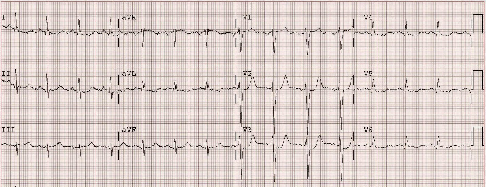
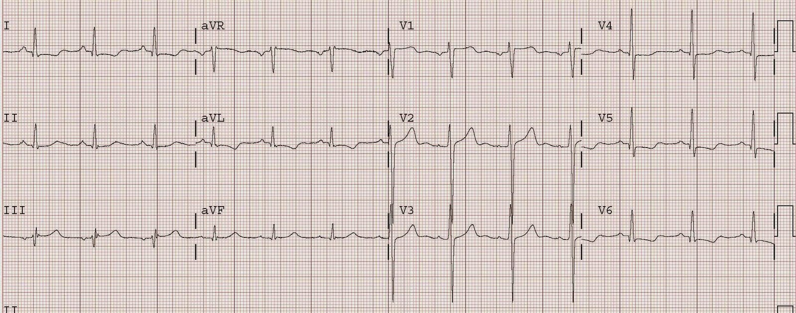
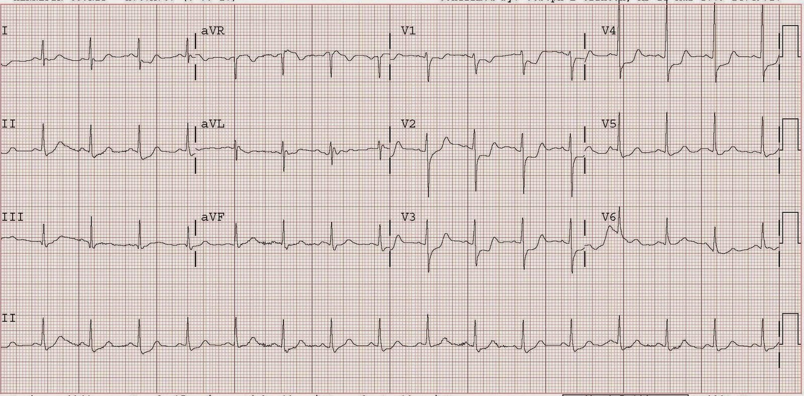
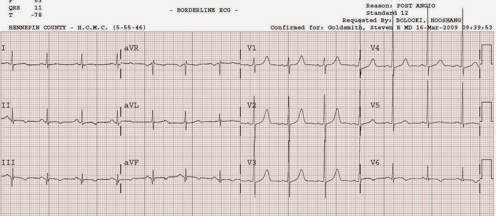
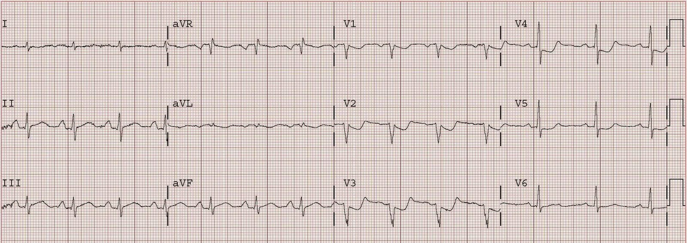
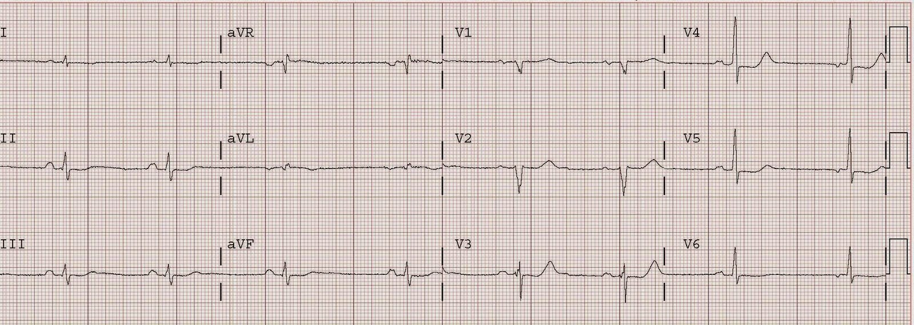

01/04/2009 — STEMI thành sau thuần túy (đơn độc) — không hề hiếm, nhưng thường bị bỏ qua!
Bản dịch tiếng Việt của bài "Pure (Isolated) Posterior STEMI — not so rare, but often ignored!" – Dr. Smith’s ECG Blog. Giữ nguyên toàn bộ 6 hình ảnh của bản gốc.
Bấm vào đây để xem thêm các ca nhồi máu cơ tim thành sau (posterior MI) và thêm phần giải thích
Ca 1.
Bệnh nhân nam 44 tuổi, tiền sử tăng huyết áp (HTN), phẫu thuật bắc cầu chủ vành (CABG) lúc 34 tuổi, và được đặt 2 stent phủ thuốc vào cầu nối nhánh chéo thứ nhất cách đây 3 tháng. Bệnh nhân đến viện lúc 1810 vì đau ngực, 5 ngày sau khi ngừng clopidogrel (theo chỉ định của một bác sĩ khác). Điện tâm đồ sau đây (#1) được ghi, cùng với điện tâm đồ #2 là điện tâm đồ nền của bệnh nhân.
#1, điện tâm đồ lúc nhập viện


#2, điện tâm đồ nền ghi 3 tháng trước


#1 cho thấy ST chênh xuống rõ, mới xuất hiện ở V2 và V3.
Chẩn đoán phân biệt là thiếu máu cục bộ dưới nội tâm mạc (subendocardial ischemia), nhiều khả năng là NSTEMI, với STEMI thành sau. Chỉ dựa vào điện tâm đồ, nhồi máu cơ tim thành sau có khả năng cao hơn vì ST chênh xuống tối đa ở các chuyển đạo trước tim bên phải, chứ không phải bên trái. Tuy nhiên, với tiền sử bệnh 3 nhánh mạch vành nặng, thận trọng nhất là bắt đầu bằng điều trị nội khoa, rồi theo dõi xem đau có hết không, nhưng đồng thời phải siêu âm tim ngay để xác định thành tim nào bị tổn thương. Nếu đau hoặc các dấu hiệu trên điện tâm đồ không hết, hoặc có rối loạn vận động thành sau, thì có chỉ định chụp mạch vành ngay kèm PCI.
Trong ca này, bệnh nhân được điều trị nội khoa tối đa với aspirin, clopidogrel, heparin, eptifibatide, metoprolol và nitroglycerin tĩnh mạch, rồi được nhập đơn vị chăm sóc mạch vành (CCU) và mời hội chẩn tim mạch ngay. Đau ngực hết và mãi đến ngày hôm sau mới chụp mạch vành. Kết quả cho thấy stent trong cầu nối tĩnh mạch hiển (SVG) tới D1 bị tắc lại 100%; huyết khối đã được hút ra. Siêu âm tim xác nhận có rối loạn vận động thành sau. Troponin tối đa là 47.
Ca 2.
Bệnh nhân nữ 54 tuổi, tiền sử hút thuốc lá, đái tháo đường (DM), tăng huyết áp, than đau ngực 3 giờ, đau sau xương ức lan ra hai vai. Điện tâm đồ ban đầu cho thấy ST chênh xuống lan tỏa và bệnh nhân được điều trị như NSTEMI. Bệnh nhân bị phù phổi nhẹ sau khi dùng metoprolol. Điện tâm đồ #2 được ghi:


ST chênh xuống tối đa từ V2 đến V4. Đây là STEMI thành sau cho đến khi chứng minh được điều ngược lại. Không may, bệnh nhân bị điều trị như NSTEMI trong 2,5 giờ cho tới khi siêu âm tim cho thấy rối loạn vận động thành sau. Thông tim phát hiện động mạch mũ bị tắc 100%. Động mạch được tái thông và đặt stent; điện tâm đồ giai đoạn hồi phục bên dưới cho thấy sóng T tái tưới máu thành sau lớn, dương, kèm QT dài.


Làm thế nào để tránh sự chậm trễ như vậy? Bằng cách ghi các chuyển đạo phía sau V7-V9: ở ngang mức mỏm xương bả vai, tại đường nách sau (V7), tại vị trí giữa điểm này và cột sống (V8), và một chuyển đạo cạnh cột sống (V9). Đồng thời, làm siêu âm tim khẩn. Quan trọng nhất là nhận ra rằng hình ảnh điện tâm đồ này có khả năng là STEMI thành sau cao hơn hẳn so với do thiếu máu cục bộ dưới nội tâm mạc, vốn có ST chênh xuống tối đa ở các chuyển đạo V4-V6.
Ca 3.
Đây là ca bệnh nhân nam 66 tuổi, tiền sử bệnh động mạch vành (CAD), đến viện vì đau ngực 1,5 giờ và đang ổn định.


Một lần nữa, ST chênh xuống tối đa ở V2-V4. Phần lớn STEMI thành sau không đơn độc mà đi kèm tổn thương thành dưới và/hoặc thành bên. Trong ca này có ST chênh lên kín đáo ở các chuyển đạo thành dưới, mà các bác sĩ điều trị không nhận ra. Hãy so sánh các đoạn ST này với các đoạn ST trên điện tâm đồ sau tái tưới máu bên dưới:


Bệnh nhân được PCI nhanh chóng đối với đoạn giữa động mạch mũ bị tắc cấp tính 100% do huyết khối; động mạch được tái thông và đặt stent. Bệnh nhân có bệnh 3 nhánh mạch vành.
STEMI thành sau thường gặp đến mức nào và ST chênh xuống ở chuyển đạo trước tim có ý nghĩa gì trong hội chứng vành cấp (ACS)?
Có nhiều nghiên cứu gián tiếp cho thấy tỷ lệ
STEMI thành sau đơn độc chiếm từ 3 đến 11% (khoảng 8%) tổng số STEMI. Gần đây hơn,
một nghiên cứu phụ của thử nghiệm TRITON-TIMI 38 mới đây, so sánh prasugrel với
clopidogrel trong hội chứng vành cấp, đã đưa vào 13.608 bệnh nhân; 1198 người có ST chênh xuống
đơn độc ở V1-V6. Trong số này, 314 người (26%) có tắc động mạch liên quan đến nhồi máu
(dòng chảy TIMI 0 hoặc 1), tức là STEMI. Tài liệu tham khảo và link toàn văn ở bên dưới.
Ngoài ra
còn 3534 STEMI khác trong nghiên cứu này, chưa kể 314 ca chỉ có ST
chênh xuống (nhiều khả năng nhất là STEMI thành sau, nhưng điều này không được
nêu rõ). Cộng 314 ca này với 3534 ca kia, ta có 314/3848 (8,1%)
STEMI, trong đó nhiều ca là STEMI thành sau đơn độc thuần túy. Điều này phù hợp với
các nghiên cứu nhỏ hơn trước đó. Hơn nữa, thông tim được thực hiện sau trung vị 29,4
giờ kể từ lúc đến viện, nên con số này không tính đến những động mạch
đã tự tái tưới máu (khoảng 25% STEMI sẽ tái tưới máu chỉ với
điều trị kháng tiểu cầu và chống huyết khối trong vòng một ngày — dữ liệu
cũ). Vì vậy, có lẽ số động mạch bị tắc còn nhiều hơn nữa.
Chỉ
14/314 ca (4,5%) được nghiên cứu viên đọc là STEMI. Không
bệnh nhân nào có động mạch bị tắc có thời gian từ điện tâm đồ đến PCI dưới 6
giờ.
Đây không phải là một biến cố “hiếm gặp” như tôi từng nghe các bác sĩ tim mạch khẳng định.
Tuy nhiên, lưu ý rằng 3/4 số bệnh nhân có ST chênh xuống ở chuyển đạo trước tim KHÔNG có động mạch bị tắc. Vì vậy, điều rất quan trọng là bạn phải đánh giá một cách thận trọng, có phê phán, ST chênh xuống ở chuyển đạo trước tim và đừng mặc định đó là STEMI thành sau. Bạn sẽ thường xuyên sai, và tôi đã chứng kiến nhiều lần kích hoạt phòng thông tim dương tính giả chỉ vì cách tiếp cận quá đơn giản.
Có tiêu chuẩn chắc chắn nào giúp chẩn đoán phân biệt giữa thiếu máu cục bộ thành trước hoặc dưới nội tâm mạc với STEMI thành sau không?
Đây là một câu hỏi rất hay và không dễ trả lời.
Thứ nhất, bạn cần biết rằng khi có ST chênh xuống ở chuyển đạo trước tim do thiếu máu cục bộ dưới nội tâm mạc, thì không nhất thiết là do thiếu máu cục bộ thành trước. Dữ liệu từ nghiệm pháp gắng sức cho thấy thiếu máu cục bộ dưới nội tâm mạc KHÔNG ĐỊNH KHU được trên điện tâm đồ, và thường biểu hiện ở các chuyển đạo II, III, aVF và V4-V6. Nhưng, xin nhắc lại, điều này không cho bạn biết động mạch nào bị tổn thương.
Thứ hai, ST chênh xuống ở V1-V3, so với ở V4-V6, có khả năng do nhồi máu thành sau cao hơn nhiều so với do thiếu máu cục bộ dưới nội tâm mạc.
Thứ ba, bệnh nhân có nguy cơ NSTEMI cao hơn (lớn tuổi hơn, nhiều yếu tố nguy cơ hơn, tiền sử chụp mạch vành có bệnh nhiều nhánh) có khả năng bị bệnh dưới nội tâm mạc cao hơn nhiều (so với một người trẻ hút thuốc lá).
Thứ tư, những bệnh nhân có lý do để bị thiếu máu cục bộ do tăng nhu cầu (nhịp nhanh, nhiễm khuẩn huyết, xuất huyết tiêu hóa, v.v.) có khả năng bị thiếu máu cục bộ dưới nội tâm mạc cao hơn nhiều (giống như trong nghiệm pháp gắng sức); những người bị nhồi máu cơ tim thành sau có khả năng cao hơn nhiều là đến viện với cơn đau ngực mới khởi phát và dấu hiệu sinh tồn bình thường.
Thứ năm, hãy tìm sóng R cao ở V1-V3 (tương đương với sóng Q ở các vị trí khác).
Thứ sáu, đặt các chuyển đạo phía sau (lấy các điện cực V4-V6 và đặt chúng ngang mức đỉnh xương bả vai, với V4 đặt ở đường nách sau (“V7”), V6 ở vùng cạnh cột sống (“V9”), và V5 (“V8”) ở giữa hai điện cực này). ST chênh lên ít nhất 0,5 mm chỉ ở một chuyển đạo dường như là “tiêu chuẩn” đơn lẻ nhạy và đặc hiệu nhất cho nhồi máu cơ tim thành sau.
Chuyển đạo phía sau có thể âm tính giả.
Xem các ca sau:
https://drsmithsecgblog.com/2013/01/precordial-st-depression-what-is.html (ST chênh xuống ở chuyển đạo trước tim: đó là gì?)
https://drsmithsecgblog.com/2011/05/posterior-leads-fail-to-diagnose.html (Chuyển đạo phía sau không chẩn đoán được)
https://drsmithsecgblog.com/2014/12/do-not-confuse-diagnosis-of-posterior.html (Đừng nhầm lẫn khi chẩn đoán nhồi máu cơ tim thành sau)
Thứ bảy, siêu âm tim ngay lập tức có thể giúp phân biệt
Thứ tám. Dù có phải là STEMI hay không, vẫn nên kích hoạt phòng
thông tim nếu không thể kiểm soát được thiếu máu cục bộ bằng điều trị nội khoa:
aspirin, nitroglycerin, thuốc chẹn beta, clopidogrel, heparin/enoxaparin, thuốc ức chế GP
IIb/IIIa.
Sóng T trong STEMI thành sau
Cũng
cần chú ý rằng trên điện tâm đồ đầu tiên (trước tái tưới máu) của ca 3, sóng T
không dương như trong các ca trước. Một số tác giả cho rằng sóng T
phải dương thì mới là STEMI thành sau. Bằng chứng cho điều này còn thiếu. Thực
tế, sóng T dương có lẽ cho thấy STEMI thành sau đã được tái tưới
máu, trong khi sóng T đảo ngược là tương đương với sóng T tối cấp
(vẫn còn tắc) nhưng được ghi từ phía đối diện. Cả hai đều có thể
gặp trong STEMI thành sau, tùy thuộc vào tình trạng tưới máu vi
mạch nhờ tái thông hoặc nhờ tuần hoàn bàng hệ.
Dưới đây là bản tóm tắt ngắn về dữ liệu chuyển đạo phía sau, trích từ:
Critical Decisions in Emergency and Acute Care Electrocardiography. William Brady và JD Truwit, chủ biên. Blackwell Publishing 2009. (Smith SW là chủ biên phần Hội chứng
vành cấp). Đây là đoạn trích nguyên văn từ một chương do
Daniel T. O’laughlin, MD, viết và tôi biên tập.
Định hướng chuyển đạo phía sau và tiêu chuẩn chẩn đoán
Các
chuyển đạo trước tim phía sau được đặt ở khoang liên sườn thứ 5
trên cùng đường ngang với V6.
Chuyển đạo V7 đặt ở đường nách sau, V8 ngay dưới đỉnh
xương bả vai và V9 ở bờ cạnh cột sống.1
ST chênh lên (STE) tới 0,5 mm, đo tại điểm J so với đoạn PR, ở
cả ba chuyển đạo có thể là bình thường.2
Wung và Drew đã đánh giá các thay đổi đoạn ST ở chuyển đạo phía sau trong khi
nong bóng (PTCA)
LCX và xác định rằng việc dùng tiêu chuẩn STE lớn hơn
hoặc bằng 0,5 mm, thay vì lớn hơn hoặc bằng 1 mm,
cho độ nhạy 94% trong phát hiện STE liên quan đến tắc
LCX.3
Con số này so với độ nhạy 49% khi tiêu chuẩn là STE lớn hơn hoặc bằng 1 mm. Ngược lại, Matetzky và cộng sự cho thấy độ
đặc hiệu 100% đối với nhồi máu cơ tim thành sau của STE lớn hơn hoặc bằng 0,5 mm ở ít nhất một chuyển đạo phía sau. Trong nghiên cứu của Wung, 81% bệnh nhân có STE lớn hơn hoặc bằng 1 mm
ở các chuyển đạo phía sau cũng có STE đáng kể khác trên điện tâm đồ 12 chuyển đạo, và
96% có một mức ST lệch khỏi đường đẳng điện nào đó.3 Tuy nhiên, 22-39% bệnh nhân bị
nhồi máu cơ tim thành sau có STE lớn hơn hoặc bằng 0,5 mm ở các chuyển đạo phía sau không có ST chênh xuống (STD)
ở V1-V3.3-5
1. Kligfield
P, Gettes LS, Bailey JJ, và cộng sự. Recommendations for the Standardization and
Interpretation of the Electrocardiogram: Part I: The Electrocardiogram and Its
Technology: A Scientific Statement From the American Heart Association
Electrocardiography and Arrhythmias Committee, Council on Clinical Cardiology;
the American College of Cardiology Foundation; and the Heart Rhythm Society
Endorsed by the International Society for Computerized Electrocardiology.
Circulation 2007;115(10):1306-24.
2. Taha B, Reddy S, Agarwal J và Khaw K.
Normal limits of ST segment measurements in posterior ECG leads. J
Electrocardiol 1998;31 Suppl:178-9.
3. Wung SF và Drew BJ. New
electrocardiographic criteria for posterior wall acute myocardial ischemia
validated by a percutaneous transluminal coronary angioplasty model of acute
myocardial infarction. Am J Cardiol 2001;87(8):970-4.
4. Matetzky S, Friemark D, Feinberg MS, và cộng
sự. Acute myocardial infarction with isolated ST-segment elevation in posterior
chest leads V7-V9: “hidden” ST-segment elevations revealing acute
posterior infarction. J Am Coll Card 1999;34(3):748-53.
5. Matetzky S, Freimark D, Chouraqui P, và cộng
sự. Significance of ST segment elevations in posterior chest leads (V7-V9) in
patients with acute inferior myocardial infarction: application for
thrombolytic therapy. J Am Coll Card 1998;31(3):506-11.
6. Pride YB, Tung P, Mohanavelu S, và cộng sự. Angiographic and ClinicalOutcomes Among Patients With Acute Coronary Syndromes Presenting With IsolatedAnterior ST-Segment Depression: A TRITON–TIMI 38 (Trial to Assess Improvement in Therapeutic Outcomes by Optimizing Platelet Inhibition With Prasugrel–Thrombolysis In Myocardial Infarction 38) Substudy Journal of the American College of Cardiology: Cardiovascular Interventions 2010;3(8):806-11.